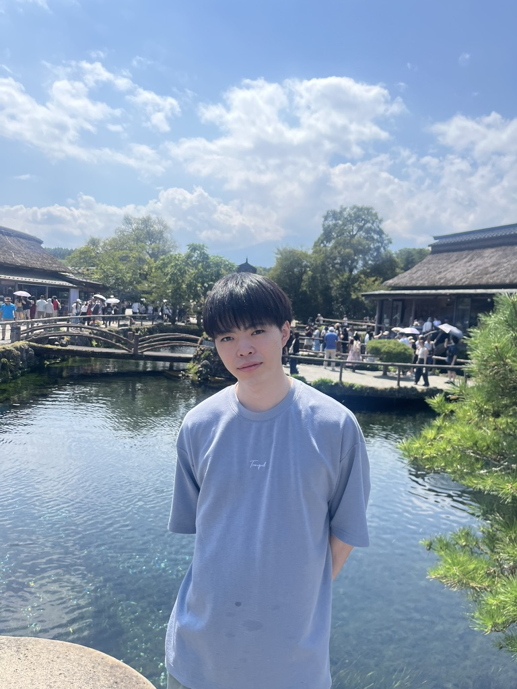

Masaki Kawamura
M1 @ Rio Yokota Lab, Institute of Science Tokyo (CLIP / LLM / VLM / VLA)
About
I'm Masaki Kawamura. Machine Learning Engineer specializing in the research and development of Large Language Models (LLMs) and Vision-Language Models (VLMs). Currently, my work focuses on data pipeline construction for the Swallow project and the application of reinforcement learning (RL) to LLMs and VLMs. I have a solid research background in CLIP models and am increasingly focused on the development of Vision-Language-Action (VLA) models for real-world applicability. I graduated early from my undergraduate program, earning my Bachelor’s degree one year ahead of schedule.
Education
- Apr 2025 - Mar 2027 (expected) Master of Science in Computer Science, Institute of Science Tokyo (Formerly Tokyo Institute of Technology)
- Apr 2022 - Mar 2025 Bachelor of Science in Computer Science, Institute of Science Tokyo (Formerly Tokyo Institute of Technology)
- Apr 2019 - Mar 2022 Sapporo North High School
Experience
- Feb 2025 - Present Researcher (Intern), SB Intuitions
- Dec 2024 - Present Technical Assistant and Research Assistant, National Institute of Advanced Industrial Science and Technology (AIST)
- Aug 2025 Backend Engineer(Intern), Money Forward
- Nov 2024 - Mar 2025 Research Assistant, National Institute of Infomatics (NII)
Publication
- Masaki Kawamura, Nakamasa Inoue, Rintaro Yanagi, Hirokatsu Kataoka, Rio Yokota. PowerCLIP: Powerset Alignment for Contrastive Pre-Training. arXiv
- Kazuki Fujii, Yukito Tajima, Sakae Mizuki, Masaki Kawamura, Hinari Shimada, Taihei Shiotani, Koshiro Saito, Masanari Oi, Taishi Nakamura, Takumi Okamoto, Shigeki Ishida, Kakeru Hattori, Youmi Ma, Hiroya Takamura, Rio Yokota, Jun Sakuma, Naoaki Okazaki. Rewriting Pre-Training Data Boosts LLM Performance in Math and Code. International Conference on Learning Representations (ICLR), 2026. arXiv
- Taishi Nakamura, Satoki Ishikawa, Masaki Kawamura, Takumi Okamoto, Daisuke Nohara, Jun Suzuki, Rio Yokota. Optimal Sparsity of Mixture-of-Experts Language Models for Reasoning Tasks. International Conference on Learning Representations (ICLR) Oral, 2026. arXiv
Hobbies
- Sports: Soccer (Atletico Madrid), Busketball
- Music: ASIAN KUNG-FU GENERATION, Sakanaction